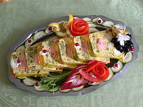

Welcome to Food Galore!
France is one of the best countries when it comes to food. It has so many varieties of foods and is such a great place to try new things at.
Some of the national dishes are Basil salmon terrine, Pot-au-feu, Crème brûlée and Crêpes
